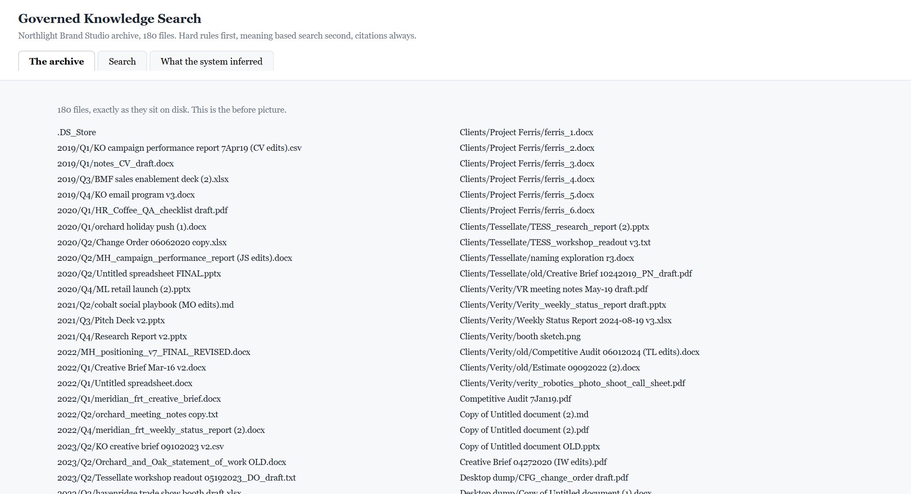
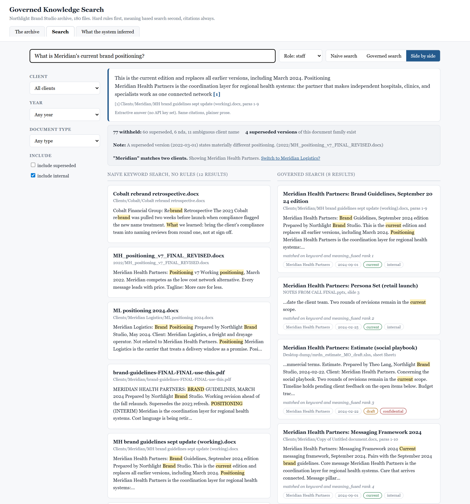
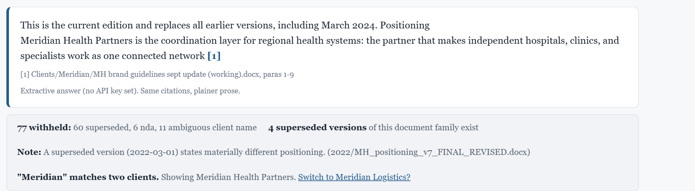
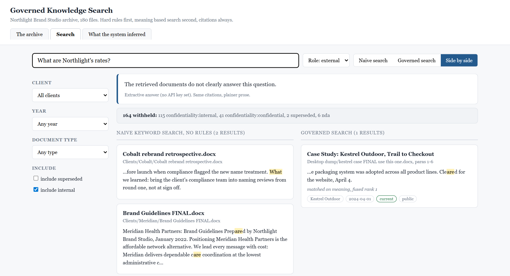
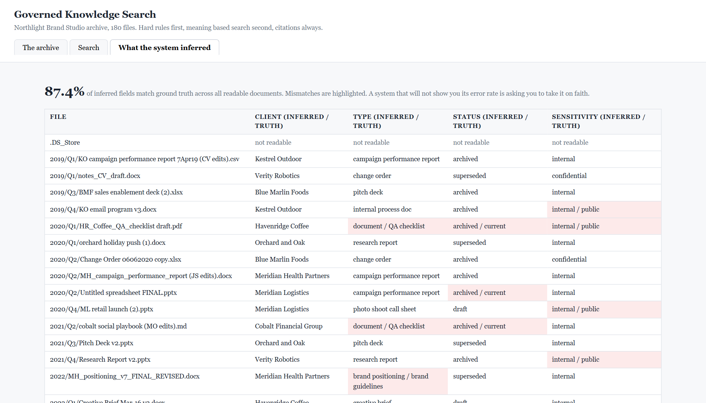

Build Lab / AI search · Retrieval · Evaluation Shipped
Governed Knowledge Search — AI over the shared drive, without the leaks.
"Just point AI at our documents" produces a system that confidently returns superseded brand guidelines and confidential rate cards. This prototype shows the correct answer: hard rules first, meaning-based search second, citations always, and honest disclosure of what the system cannot see. Runs on a laptop with the wifi off. No API key required.
The problem
Every mid-sized company has a shared drive with years of documents nobody can find. The obvious fix is to put an AI search box on top. The obvious fix is also how a sales rep ends up quoting a 2022 positioning statement the client retired, or how an external contractor's search surfaces an internal rate card because it matched on a stray word. Retrieval is easy. Governed retrieval, where the system knows what is current, what is confidential, and what it simply cannot read, is the actual job.
To make that concrete and repeatable, the build generates its own test environment: a fictional 30-person agency with a 180-file archive designed to be realistically awful.

Copy of Untitled document.docx. Every file here is synthetic.The one demo moment
The user asks: "What is Meridian's current brand positioning?" Left is naive keyword search over everything. Right is the governed pipeline. Same archive, same question.


Switch the role to external and ask about rates: zero results, and the strip shows the rate card was withheld. The permission check runs in SQL before retrieval, so the language model never receives the document. It cannot leak what it never sees.

The architecture
Python, FastAPI, SQLite with FTS5, and a local embedding model. No vector database, no cloud, no build step. The corpus is small enough that a brute-force cosine scan in numpy is both faster and simpler than anything with moving parts.
- 01Generate
A seeded generator writes 180 files across docx, pdf, pptx, xlsx, csv, md, txt, and images, with nine deliberate traps and a ground-truth answer key. Byte-identical on every run, so the evaluation is stable.
- 02Ingest
Extract text per format. Infer client, document type, date, status, and confidentiality from content first, filename second, because the corpus is built to punish trusting filenames. Unknown sensitivity defaults to restrictive. Scanned PDFs are flagged as unreadable, not skipped silently.
- 03Gate
Role, client, date, type, and status filters run as a SQL WHERE clause before any retrieval. Everything excluded is counted by reason. This is the step most AI search demos leave out.
- 04Retrieve
Keyword (FTS5) and semantic (cosine) search over surviving chunks only, fused with reciprocal rank fusion. Near-duplicate chunks collapse into one result. Name collisions resolve to one client with a visible switch.
- 05Answer
An answer built from the top chunks only, with a citation pointing at a specific file and location. With an API key set, a model writes the prose. Without one, a deterministic extractive answer uses the same citations. The interface is identical either way.
- 06Disclose
Withheld counts, unreadable documents in scope, client ambiguity, and contradiction with superseded versions ship with every response and render in a strip that is always present, even when empty.
How I know it works
Sixteen gold questions cover every trap: version resolution, client disambiguation, NDA refusal, internal documents at the external role, scanned-PDF honesty, the misleading filename, the answer buried in notes.txt, near-duplicate collapsing, and contradiction disclosure. Both pipelines run the same set.
- Governed: 16 of 16 passed, zero governance violations.
- Naive: 5 of 16 passed, 24 governance violations. A violation means a document that should have been withheld came back. One violation fails a run regardless of retrieval quality, because one leaked rate card costs more than a hundred good answers earn.
The interface also has a tab that shows every metadata call the system made against the ground truth, with mismatches highlighted and an overall accuracy number. It currently reads 87%. A search product that will not show you its own error rate is asking you to take it on faith.

The decisions that made it useful
- Rules before retrieval, not after. Filtering results after a model has seen them is how leaks happen. Gating in SQL means the model's input is already clean.
- Count what you hide. A system that quietly returns fewer results is indistinguishable from a broken one. Every exclusion carries a reason and a number.
- Content over filenames. The correct Meridian answer lives in a file called
Copy of Untitled document.docx. Any system that trusted names would miss it. - Ambiguity gets resolved out loud. When a name matches two clients, the system picks the one with the larger body of work, says so, and offers the switch. Blending two clients into one ranking is the silent failure this replaces.
- Refuse instead of reach. When retrieved passages do not support an answer, the answer says so. The nonsense-query case in the eval exists to keep that honest.
- The answer key is invisible to the pipeline. The ground-truth manifest exists only for the evaluation and the accuracy tab. The ingest code never opens it.
What this does not share
- Every document, client, person, and number in this build is synthetic. The agency, its clients, and its staff do not exist, so the screenshots above need no redaction.
- No real authentication. Roles are a dropdown, which is the honest version for a demo. Wiring this to real identity is a deployment decision, not a retrieval one.
- No OCR. Scanned documents are detected and disclosed, not read.
- Built with AI-assisted development: I owned the design, the governance rules, the trap corpus, the evaluation criteria, and the decision about what the interface must admit. The source is public.
Have a knowledge base people cannot trust?